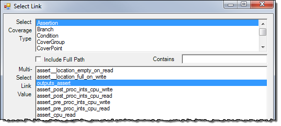

Adding Links with the Select Link Dialog
Links can be added to the plan from the OpenOffice add-in.
Add links to the selected cell in a spreadsheet using the Select Links dialog, as follows.
Procedure
- To add a rule:
- If applicable, select the
scope (Assertion, Test, Instance, DU, ...) related to the rule.Figure 2. Adding a Rule with Select Link
Figure 2 shows that the “Assertion” Coverage Type and “outputs_assert” Link Value are selected.
- Press the Add Rule button.
The Add Rule dialog appears as shown in Figure 3. Figure 3. Add Rule Dialog Box

Because a Link Value was selected in the Select Link dialog, when the Add Rule dialog opens, the Objects Path field is automatically populated with that value.
- Select the Rule Category and fill in the other rule parameters.
- Select Add to add the rule to the Cell.
See “Settings Dialog” for details on setting up the rule syntax version. For more details on using Rules for linking coverage items to the testplan, see “Rules-based Linking for Tracking Verification Requirements”.
- If applicable, select the
scope (Assertion, Test, Instance, DU, ...) related to the rule.